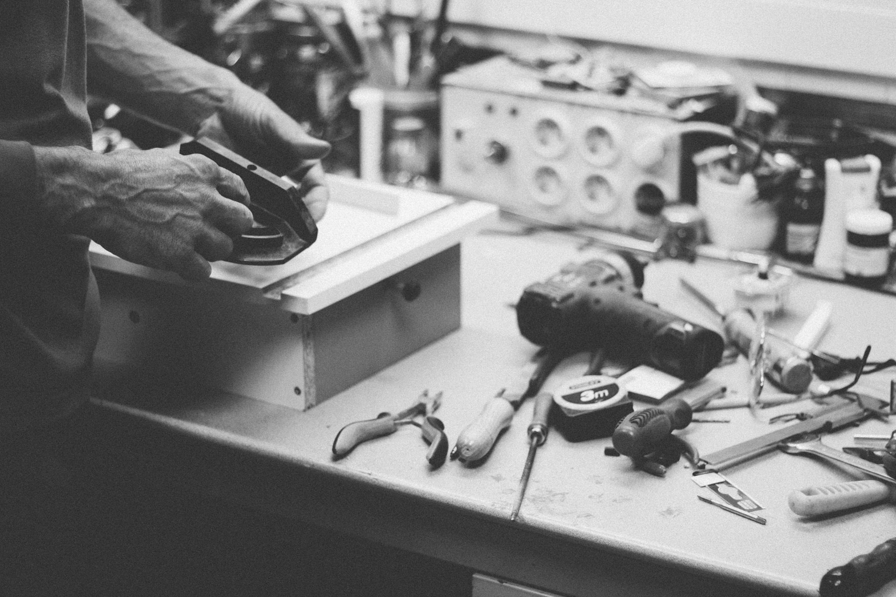

Jules Deschamps
Réalisations
Services
Approche
Contact

Créateur de sites internet
Des sites sur-mesure
pour les
paysagistes.
praticiens.
artisans.
commerçants.
indépendants.
paysagistes.
10 sites en ligne
Réponse sous 24 h
Un seul interlocuteur
Voir mes réalisations ↓
Un projet ? Écrivez-moi
↓ Défiler pour voir le travail
Sites livrés partout en France
Réalisations
Des sites qui leur ressemblent.
Transition →
A · Franc et net
B · Chevauchement
C · Sas sombre
Défilez jusqu'à la jointure pour comparer.